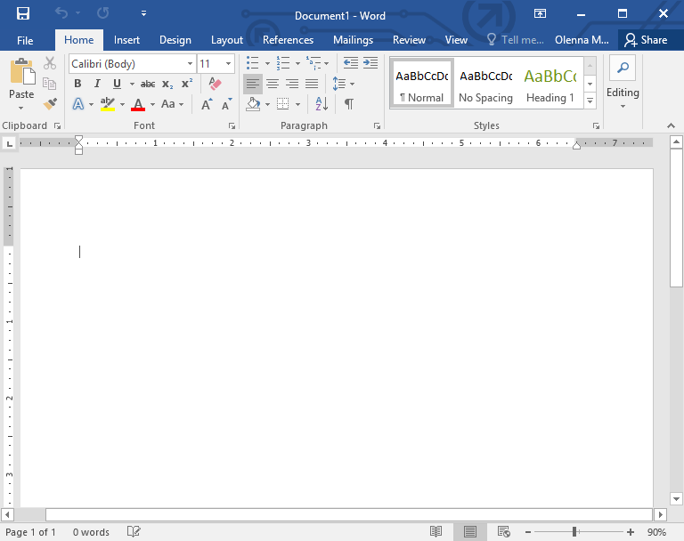
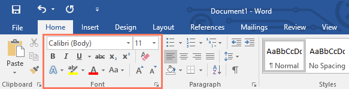
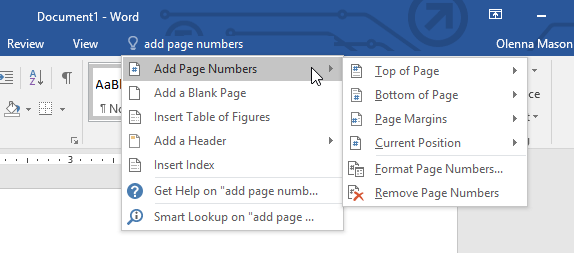
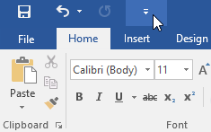
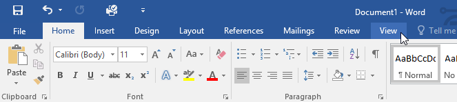
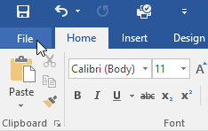
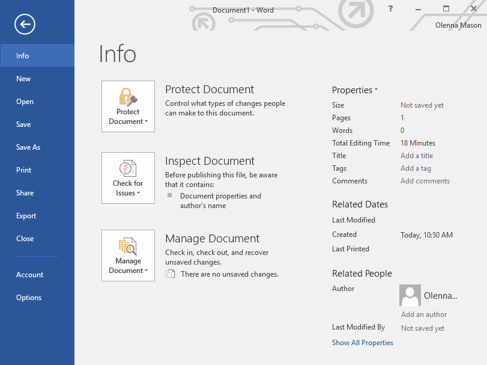
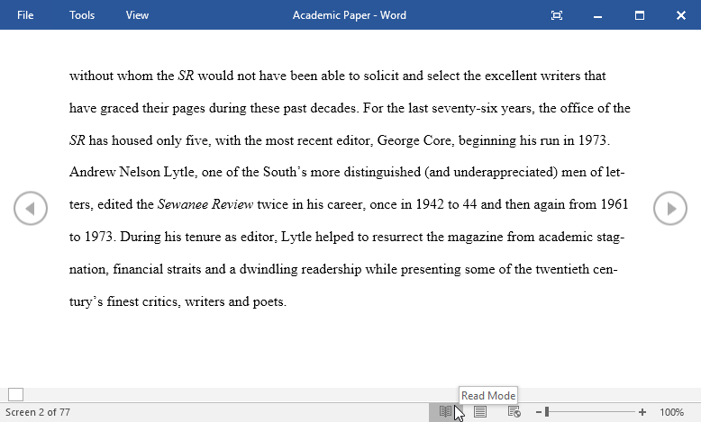
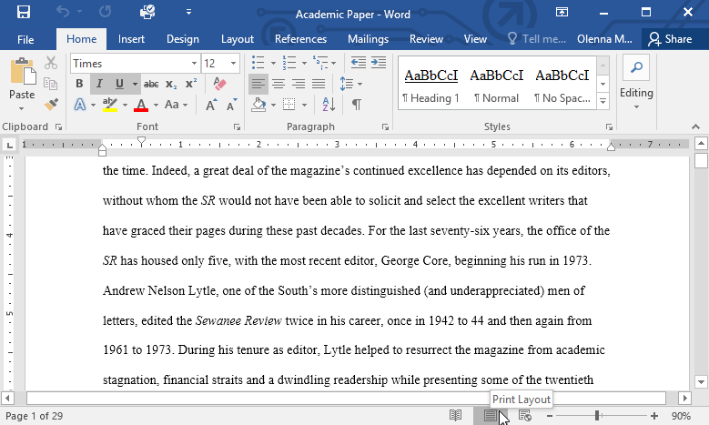
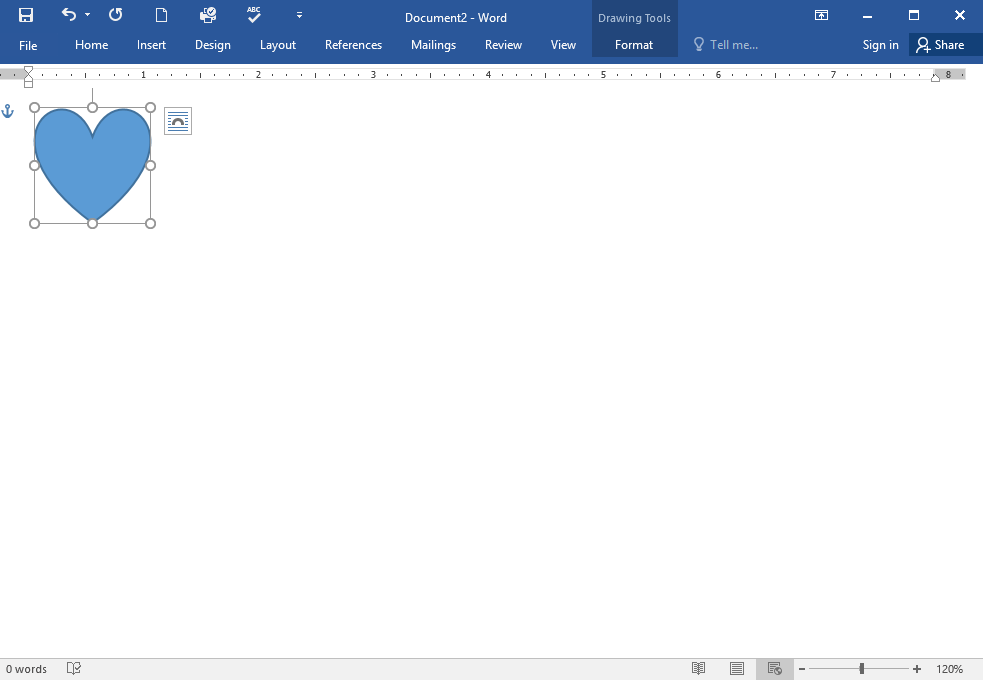

Lesson 1: getting-started-with-word
Lesson 1: Getting Started with Word
Introduction
Microsoft Word is a word processing application that allows you to create a variety of documents, including letters, resumes, and more. In this lesson, you'll learn how to navigate the Word interface and become familiar with some of its most important features, such as the Ribbon, Quick Access Toolbar, and Backstage view.
Watch the video below to become more familiar with Word.
[](../../../../../www.youtube.com/embed/j-ZAVHk5SaU.webm)
About this tutorial
The procedures in this tutorial will work for all recent versions of Microsoft Word, including Word 2019, Word 2016, and Office 365. There may be some slight differences, but for the most part these versions are similar. However, if you're using an earlier version, you may want to refer to one of our other Word tutorials instead.
The Word interface
When you open Word for the first time, the Start Screen will appear. From here, you'll be able to create a new document, choose a template, and access your recently edited documents. From the Start Screen, locate and select Blank document to access the Word interface.

Click the buttons in the interactive below to learn more about the Word interface.
doneedit hotspots

Microsoft Account
From here, you can access your Microsoft account information, view your profile, and switch accounts.
Tell Me
The Tell me bar allows you to search for commands, which is especially helpful if you don't remember where to find a specific command.
Command Group
Each group contains a series of different commands. Simply click any command to apply it. Some groups also have an arrow in the bottom-right corner, which you can click to see even more commands.
Quick Access Toolbar
The Quick Access Toolbar lets you access common commands no matter which tab is selected. By default, it includes the Save, Undo, and Redo commands.
The Ruler
The Ruler is located at the top and to the left of your document. It makes it easier to make alignment and spacing adjustments.
Scroll Bar
Click and drag the vertical scroll bar to move up and down through the pages of your document.
Zoom Control
Click and drag the slider to use the zoom control. The number to the right of the slider bar reflects the zoom percentage.
Document Views
There are three ways to view a document:
Read Mode displays your document in full-screen mode.
Print Layout is selected by default. It shows the document as it would appear on the printed page. Web Layout shows how your document would look as a webpage.
The Ribbon
The Ribbon contains all of the commands you will need to perform common tasks in Word. It has multiple tabs, each with several groups of commands.
Document Pane
This is where you'll type and edit text in the document.
Page and Word Count
From here, you can quickly see the number of words and pages in your document.
Zoom Control
Click and drag the slider to use the zoom control. The number to the right of the slider bar reflects the zoom percentage.
Working with the Word environment
All recent versions of Word include the Ribbon and the Quick Access Toolbar, where you'll find commands to perform common tasks in Word, as well as Backstage view.
The Ribbon
Word uses a tabbed Ribbon system instead of traditional menus. The Ribbon contains multiple tabs, which you can find near the top of the Word window.

Each tab contains several groups of related commands. For example, the Font group on the Home tab contains commands for formatting text in your document.

Some groups also have a small arrow in the bottom-right corner that you can click for even more options.

Showing and hiding the Ribbon
If you find that the Ribbon takes up too much screen space, you can hide it. To do this, click the Ribbon Display Options arrow in the upper-right corner of the Ribbon, then select the desiredoption from the drop-down menu:

- Auto-hide Ribbon: Auto-hide displays your document in full-screen mode and completely hides the Ribbon from view. To show the Ribbon, click the Expand Ribbon command at the top of screen.
- Show Tabs: This option hides all command groups when they're not in use, but tabs will remain visible. To show the Ribbon, simply click a tab.
- Show Tabs and Commands: This option maximizes the Ribbon. All of the tabs and commands will be visible. This option is selected by default when you open Word for the first time.
Using the Tell me feature
If you're having trouble finding a command you want, the Tell Me feature can help. It works just like a regular search bar. Type what you're looking for, and a list of options will appear. You can then use the command directly from the menu without having to find it on the Ribbon.

The Quick Access Toolbar
Located just above the Ribbon, the Quick Access Toolbar lets you access common commands no matter which tab is selected. By default, it shows the Save, Undo, and Redo commands, but you can add other commands depending on your needs.
To add commands to the Quick Access Toolbar:
- Click the drop-down arrow to the right of the Quick Access Toolbar.

2. Select the command you want to add from the menu. 3. The command will be added to the Quick Access Toolbar.
3. The command will be added to the Quick Access Toolbar.

The Ruler
The Ruler is located at the top and to the left of your document. It makes it easier to adjust your document with precision. If you want, you can hide the Ruler to create more screen space.
To show or hide the Ruler:
- Click the View tab.

2. Click the checkbox next to Ruler to show or hide the Ruler.
Backstage view
Backstage view gives you various options for saving, opening a file, printing, and sharing your document. To access Backstage view, click the File tab on the Ribbon.

Click the buttons in the interactive below to learn more about using Backstage view.
edit hotspots

Open
From here, you can open documents saved to your computer or to your OneDrive.
Save and Save As
You'll use Save and Save As to save documents to your computer or to OneDrive.
From the Print pane, you can change the print settings and print your document. You can also see a preview of your document.
Export
From here, you can export your document in another file format, such as PDF/XPS.
Close
Click here to close the current document.
Share
From here, you can invite people to view and collaborate on your document.
Return to Word
You can use the arrow to close Backstage view and return to Word.
Account
From the Account pane, you can access your Microsoft account information, modify your theme and background, and sign out of your account.
Options
Here, you can change various Word options. For example, you can control the spelling and grammar check settings, AutoRecover settings, and language preferences.
Info
The information pane will appear whenever you access Backstage view. It contains information on the current document. You can also inspect the document to remove personal info and protect it to keep others from making further changes.
New
From here, you can create a new blank document, or you can choose from a large selection of templates.
Document views and zooming
Word has a variety of viewing options that change how your document is displayed. You can choose to view your document in Read Mode, Print Layout, or Web Layout. These views can be useful for various tasks, especially if you're planning to print the document. You can also zoom in and out to make your document easier to read.
Switching document views
Switching between different document views is easy. Just locate and select the desired document view command in the bottom-right corner of the Word window.
- Read Mode: This view opens the document to a full screen. This view is great for reading large amounts of text or simply reviewing your work.

* Print Layout: This is the default document view in Word. It shows what the document will look like on the printed page.
* Web Layout: This view displays the document as a webpage, which can be helpful if you're using Word to publish content online.
Zooming in and out
To zoom in or out, click and drag the zoom control slider in the bottom-right corner of the Word window. You can also select the + or - commands to zoom in or out by smaller increments. The number next to the slider displays the current zoom percentage, also called the zoom level.

Challenge!
- Open Word, and create a blank document.
- Change the Ribbon Display Options to Show Tabs.
- Using Customize Quick Access Toolbar, add New, Quick Print, and Spelling & Grammar.
- In the Tell me bar, type Shape and press Enter.
- Choose a shape from the menu, and double-click somewhere on your document.
- Show the Ruler if it is not already visible.
- Zoom the document to 120%.
- Change the Document view to Web Layout.
- When you're finished, your document should look something like this:

10. Change the Ribbon Display Options back to Show Tabs and Commands, and change the Document View back to Print Layout./en/word/understanding-onedrive/content/